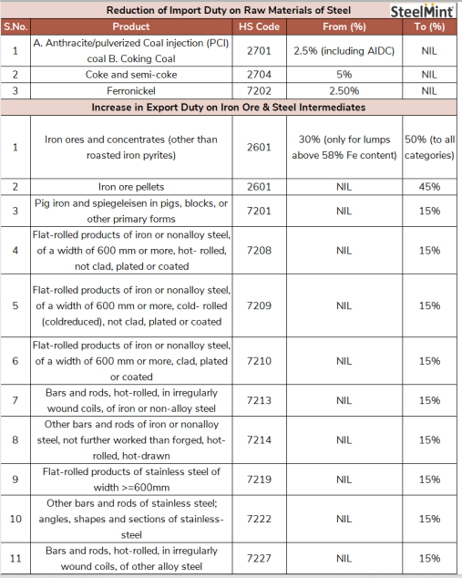

Ministry of Finance & Ministry of Commerce & Industry
Government’s Fiscal Measures to contain Inflation in India
Relevant to All Mahindra Businesses
Recognizing the nature of inflationary pressure in the economy, the Government of India took various fiscal measures this month.
- Heavy duty on steel, iron ore, and pellets exports
-
In order to preserve higher domestic supplies and control rising prices, imposed hefty export duties on steel and steelmaking raw materials and intermediaries on 21st May 2022.
-
The government has also cut the import duty on coking coal and metallurgical coke as well as PCI and anthracite coal to offer some relief to domestic end-users grappling with high inflation.
New Duty Structure
-
Iron ore of all grades to attract 50% duty
45% duty to be levied on pellets exports
-
15% duty imposed on steel exports
-
Export duty on iron ore of all grades has been fixed at 50% from 30% previously only on ore of grade above Fe 58%.
-
Pig iron exports will now attract a duty of 15% from nil previously. India's pig iron exports had risen to 1.3 mnt in CY'21.
-
An export duty of 15% will be levied on hot-rolled and cold-rolled alloy and non-alloy flat steel products of 600mm or more in width from zero duty previously.
-
15% duty will be levied on exports of hot-rolled bars and rods, other bars and rods of iron or non-alloy steel, flat-rolled products of stainless steel, bars and rods of stainless steel as well as angles, shapes and sections of stainless-steel.
-
Offering some relief to stainless steel producers, the government has removed the 2.5% import duty on ferro nickel.
-
Amid the surge in global and domestic coal prices, the government has removed the 5% import duty on metallurgical coke and the 2.5% duty on coking coal.

Rationale and Impact
-
Raising export duty on key raw materials and finished steel products and reduction import duty on raw materials which are imported clearly shows the government’s intent to control rising prices of steel in the domestic market.
-
Following the Russia-Ukraine war, global and domestic steel prices had risen sharply amid rising energy prices leading to global inflation. Export duty on steel is likely to result in higher domestic supplies, thereby exerting downward pressure on prices.
-
In line with its earlier move of lifting the import duty on ferrous scrap announced in the Budget, the government is seeking to ease the pressure on domestic producers by removing import duties on raw materials.
-
The immediate impact of the government's tough stand on reducing steel and steelmaking raw material exports could be a decline in iron ore fines and pellets shipments. Likewise, exports of flat steel and stainless steel by the country's steel majors are likely to be affected.
-
Overall, the government's move is likely to create higher steel and steelmaking raw material supplies for the domestic industry and result drop in steel prices
-
Excise duty cut on petrol and diesel
The fiscal measures include a reduction in excise duty on petrol by Rs 8 per litre and on diesel by Rs 6 per litre. There was further reduction in the final price as price as VAT component were also reduced due to reduction in excise duty.
-
Subsidy on LPG
Over 90 million beneficiaries of the Pradhan Ujjwala Yojana will be given a subsidy of Rs 200 per LPG cylinder for up to 12 refills in a year.
-
Subsidy on Fertilisers
In order to cushion the impact of rising global prices of fertilisers due to the ongoing geopolitical tension between Russia and Ukraine, the government also announced an additional subsidy of Rs 1.10 lakh crore over and above the Rs 1.05 lakh crore provided in the budget.
-
Restrictions on Wheat Exports
-
On May 14, India announced restrictions on wheat exports with the hope of bringing stability in wheat prices that had shown upward trend amid supply disruptions due to Ukraine-Russia War and output reduction due to scorching heat wave prevailed in the wheat producing belt of India.
-
Export to be allowed only on the basis of permission granted by the government to other countries to meet their food security needs based on the request of the governments.
-
Duty-free import of Cooking Oil
-
The Government has allowed the import of 20 lakh tonnes of crude soy and sunflower oil per annum for two years at zero customs duty. It also cut basic customs duty on crude palm oil to 10 per cent till September.
-
Cooking oil prices have been rising due to the Russia-Ukraine war as both the countries are major exporters.
-
In India, 85-90% of soya and sun oil is directly used in home kitchens while the rest 10-15% is used in in food industry, mainly in the packed food segment like ready to eat, baked goods, snacks, pickles, dressings and sauces. So, with zero duty on soy and sun oil retail consumers are expected to be benefitted the most.
-
Restrictions on Sugar Exports
-
The government has capped sugar export and put it in the 'restricted category' from June to make the availability of sugar easily in the domestic market and check price rise.
-
With effect from 1st June, 2022 till 31st October, 2022, or till further order, whichever is earlier, the export of the sugar will be allowed with specific permission of the Directorate of Sugar, Department of Food and Public Distribution. These restrictions won't apply to sugar being exported to EU and the US under CXL and TRQ.
-
Government has set a cap of 10 million tonnes for export of sugar during the period of June- October 2022. Further it has mandated exporters to seek permission from Department of Food and Public Distribution before signing any further export contracts during this period.
Industry Reactions
|
Nirmala Sitharaman, Finance Minister, Government of India
|
-
We are calibrating customs duty on raw materials and intermediaries for iron and steel to reduce their prices
-
Despite rising fertilizer prices globally, we have protected our farmers from such price hikes. In addition to the fertiliser subsidy of Rs 1.05 lakh crore in the Budget, an an additional amount of ₹1.10 lakh crore is being provided to further cushion our farmers
|
|
Indian Steel Association (ISA)
|
-
The imposition of export duty on steel would send a negative signal to investors and adversely impact the sector’s capacity utilisation.
|
|
Rajat Mohan, Senior Partner, AMRG & Associates
|
-
Global economies are ailing due to rising debt and high inflation. In light of collapsing weak developing economies due to high inflation, the Indian government has taken multiple measures to provide relief from the high prices of petrol, diesel, coal, iron, steel and plastic.
|
|
Pushan Sharma, Director, CRISIL Research.
|
-
As all the edible oil prices are strongly correlated to each other, thus duty reduction in soy and sun oil shall have pressure on the prices of palm oil as well in coming months.
|
Conclusion
Following the Russia-Ukraine war, global and domestic steel prices had risen sharply amid rising energy prices leading to global inflation. As it is supply side problem, fiscal measures would be more effective on curbing inflation. Export duty on steel is likely to result in higher domestic supplies, thereby exerting downward pressure on prices. Other fiscal measures like export restrictions on wheat, sugar, duty free import of edible oils, reduction of excise duty on petrol and diesel, subsidy on LPG and fertilisers are also intended to push back the inflationary trend in the economy.